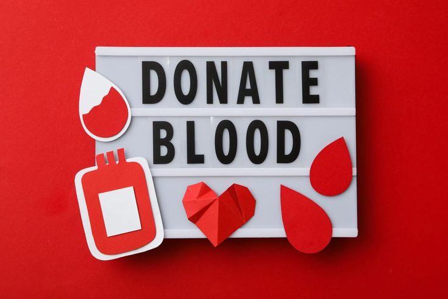

Tentang Donor Darah
Donor darah merupakan sebuah tindakan kemanusiaan yang sangat penting dalam dunia medis dan keselamatan pasien. Proses ini melibatkan pengambilan darah dari seseorang secara sukarela, yang kemudian akan digunakan untuk membantu pasien yang membutuhkan transfusi darah, seperti korban kecelakaan, pasien operasi, atau penderita penyakit tertentu.
Dalam praktiknya, darah diambil dari pembuluh darah vena menggunakan jarum steril oleh tenaga medis profesional. Setelah darah terkumpul, darah tersebut tidak langsung digunakan, melainkan diperiksa secara ketat untuk memastikan bebas dari penyakit menular dan memenuhi standar keamanan transfusi. Darah juga bisa dipisahkan menjadi beberapa komponen penting seperti sel darah merah, plasma, dan trombosit, agar bisa digunakan sesuai kebutuhan medis spesifik.
Keberadaan stok darah yang memadai sangat krusial bagi layanan kesehatan masyarakat. Banyak rumah sakit bergantung pada ketersediaan darah untuk menangani berbagai kondisi darurat dan perawatan rutin. Oleh karena itu, donor darah menjadi kegiatan yang sangat bernilai karena dapat menyelamatkan nyawa dan meningkatkan kualitas pelayanan kesehatan.
Kegiatan donor darah biasanya dilakukan secara rutin oleh lembaga seperti Palang Merah Indonesia (PMI), rumah sakit, atau organisasi sosial. Selain di lokasi tetap, banyak juga donor darah yang dilakukan menggunakan mobil unit khusus yang menjangkau berbagai tempat, sehingga masyarakat dapat berdonor dengan mudah dan aman.
Di samping manfaat medisnya, donor darah juga merupakan wujud nyata solidaritas dan kepedulian sosial. Dengan mendonorkan darah, seseorang turut membantu sesama yang mungkin tidak dikenal, namun sangat membutuhkan pertolongan. Hal ini menjadikan donor darah tidak hanya sebuah prosedur medis, tetapi juga aksi kemanusiaan yang mulia.
Pengelolaan darah setelah pengambilan juga dilakukan dengan standar keamanan tinggi, mulai dari pelabelan, pemeriksaan laboratorium, penyimpanan pada suhu tepat, hingga distribusi ke fasilitas kesehatan. Sistem ini memastikan darah yang didistribusikan benar-benar aman dan berkualitas untuk digunakan pada pasien.
Secara nasional dan internasional, donor darah juga berperan penting dalam menghadapi situasi darurat seperti bencana alam dan krisis kemanusiaan. Dalam kondisi tersebut, kebutuhan darah melonjak tajam sehingga keberadaan stok darah yang baik sangat vital dalam menyelamatkan banyak nyawa.
Dengan segala proses dan maknanya, donor darah menjadi bagian penting dari sistem layanan kesehatan dan nilai kemanusiaan yang tinggi, menggambarkan kepedulian, pengorbanan, dan solidaritas antar sesama manusia.
Manfaat Donor
🩸 1. Menjaga Kesehatan Jantung
Donor darah secara rutin membantu menurunkan kelebihan zat besi dalam tubuh, yang jika menumpuk dapat
meningkatkan risiko penyakit jantung.
🩸 2. Merangsang Produksi Sel Darah Baru
Setelah mendonorkan darah, tubuh akan memproduksi sel darah merah baru untuk menggantikan yang hilang.
🩸 3. Deteksi Dini Masalah Kesehatan
Sebelum donor, dilakukan pemeriksaan kesehatan yang dapat mendeteksi kondisi medis lebih awal.
🩸 4. Meningkatkan Kesehatan Mental dan Emosional
Donor darah memberikan rasa puas karena membantu sesama, serta dapat mengurangi stres.
🩸 5. Membakar Kalori
Dalam satu kali donor, tubuh dapat membakar sekitar 500 kalori.
🩸 6. Menjaga Keseimbangan Zat Besi dalam Tubuh
Donor darah membantu mencegah penumpukan zat besi yang berlebih di tubuh.
🩸 7. Membantu Penanganan Darurat dan Krisis Medis
Donor darah sangat dibutuhkan dalam situasi darurat seperti kecelakaan dan bencana.
Syarat & Ketentuan
🩸 Syarat Umum Pendonor Darah:
Berusia 17–60 tahun
Berat badan minimal 45–50 kg
Tekanan darah normal (sistolik 100–170 mmHg, diastolik 70–100 mmHg)
Denyut nadi 50–100 bpm dan stabil
Kadar hemoglobin minimal pria 13 g/dL, wanita 12,5 g/dL
Sehat jasmani dan rohani, tidak sedang sakit atau kelelahan
Tidak mengonsumsi obat tertentu
Jarak donor minimal 12 minggu untuk donor darah utuh
🚫 Kondisi Penundaan Donor:
Baru menjalani operasi besar atau transfusi
Baru vaksinasi tertentu
Baru tindik, tato, atau akupunktur dalam 6–12 bulan
Sedang hamil atau baru melahirkan
Infeksi akut atau perjalanan ke daerah malaria endemik
❌ Kondisi Tidak Memenuhi Syarat Permanen:
Penyakit kronis seperti HIV/AIDS, hepatitis, epilepsi
Riwayat narkotika atau zat adiktif
Pernah transplantasi organ
Gangguan perdarahan
Proses Donor
Mitos & Fakta
Info Medis: Efek Samping & Penanganan
🌡 1. Pusing atau Kepala Terasa Ringan
Terjadi karena kehilangan darah, penanganan dengan istirahat dan minum air manis.
🩹 2. Memar atau Bengkak di Area Suntikan
Kompres dingin dan hindari angkat beban berat selama 24 jam.
🤢 3. Mual atau Lemas
Duduk atau berbaring, minum air manis, dan istirahat.
🤕 4. Nyeri di Lengan
Kompres hangat dan hindari gerakan ekstrem.
🩸 5. Pendarahan Setelah Donor
Tekan dengan kain kasa, jika tidak berhenti segera konsultasi.
🧬 6. Reaksi Vasovagal (Jarang Terjadi)
Ditangani dengan posisi kaki lebih tinggi, minuman manis, dan pengawasan.
🔎 Kapan Menghubungi Petugas?
Jika gejala memburuk, perdarahan tak berhenti, demam, atau infeksi.